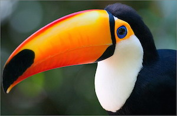
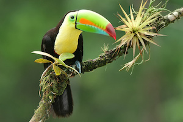
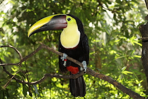

Туканы
Туканы — самые крупные представители отряда Дятлообразных, выделяющиеся своей экзотической внешностью. У туканов несоизмеримо большой, сжатый с боков, яркоокрашенный клюв. Однако сам клюв, несмотря на свои размеры, не настолько тяжёл, как кажется, из-за наличия в нём воздушных полостей. Самые крупные представители отряда дятлообразных. Насчитывают 37 видов птиц, объединяемых в 6 родов.
Тукановые населяют равнинные и горные (до 3000 м) тропические леса Америки от южной Мексики до северной Аргентины. Гнездятся в естественных или выдолбленных дятлами дуплах.
Своё название эти птицы получили из-за того, что представители одного из их видов кричат что-то вроде «токано!»
Большой тукан
Большой тукан (лат. Ramphastos toco) — крупнейший и один из самых известных видов в семействе туканов. Они обитают в большой части Центральной и Южной Америки.
Описание

У большого тукана необыкновенное оперение: тело его черное, воротник, грудь и верхняя часть хвоста белые, а нижняя часть хвоста красная. Вокруг глаза у него тонкая голубая кожа, она окружена оранжевой, более грубой. Но самым выдающимся у него является гигантский желто-оранжевый клюв с красной частью сверху и черным пятном на конце. Он выглядит тяжелым, но, как и у других туканов, он полый. Язык у этого вида почти такой же длинный, как и клюв, и очень плоский.
Длина большого тукана 55–65 см, длина клюва почти 20 см, вес его в среднем 700 г, таким образом он является самым большим представителем семейства туканов и самым большим дятлообразным. Самцы большого тукана больше самок, в остальном по внешнему виду они не отличаются. У молодых птиц более бледный и короткий клюв, чем у взрослых. Голос этих туканов неприятный, каркающий, с частым повтором. Иногда громко издают щелкающий призывный звук клювом.
Радужный тукан
Радужный тукан (лат. Ramphastos sulfuratus) — один из представителей группы Ramphoslos. Его ареал простирается от Южной Мексики до северной Колумбии и северо-восточной Венесуэлы.
Описание

Радужный тукан имеет большой полый клюв, достигающий до 17 см в длину. Окрас клюва зелёный, с голубыми вкраплениями в нижней части и с оранжевой полосой сбоку. Оперение на спине, животе, и верхней части крыльев чёрное матовое, на верхней части шеи — чёрное с красным отливом. Грудь и щеки жёлто-лимонного оттенка, нижняя часть хвоста — ярко-красная. Длина тела птицы — 50–53 см, вес — 400 г.
Половой диморфизм выражен слабо: мужские особи лишь немного крупнее женских. Радужные туканы живут небольшими группами по 5–10 особей. Ночуют они в дуплах, плотно прижимаясь друг к другу и подворачивая свои громоздкие клювы под крыло соседей, что хорошо экономит место ввиду небольшого размера жилища.
Коричневоспинный тукан
Коричневоспинный тукан (лат. Ramphastos swainsonii) — птица из семейства тукановых. Видовой эпитет дан в честь английского орнитолога Уильяма Свенсона (1789–1855).
Описание

Оперение птиц, похожее на оперение радужного тукана, большей частью чёрное. От груди до глаз тянется жёлтое пятно, обрамлённое на груди красной полосой. Чёрные глаза имеют зелёную окантовку. Ноги синие. Клюв длиной от 15 до 20 см, двухцветный. На надклювье имеется жёлтая полоса, начинающаяся от лба и становящаяся шире к концу. Подклювье каштанового цвета.
Коричневоспинный тукан достигает длины до 56 см. Самки немного меньше самцов, их длина составляет примерно 52 см. Вес самок составляет 580 г, самцы весят примерно 750 г.
Сравнительная таблица
Вид Вес Длина Клюв
Большой тукан 700 г 55–65 см 20 см
Радужный тукан 400 г 50–53 см до 17 см
Коричневоспинный тукан 580–750 г 52–56 см 15–20 см
По материалам Википедии.